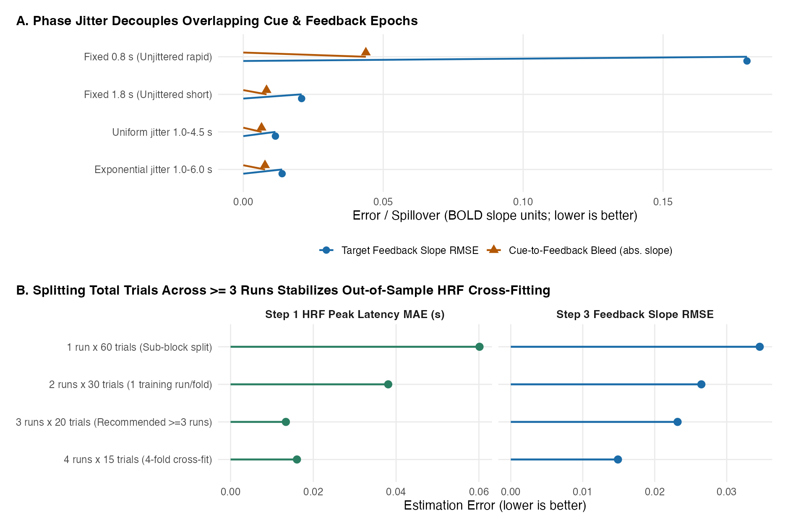
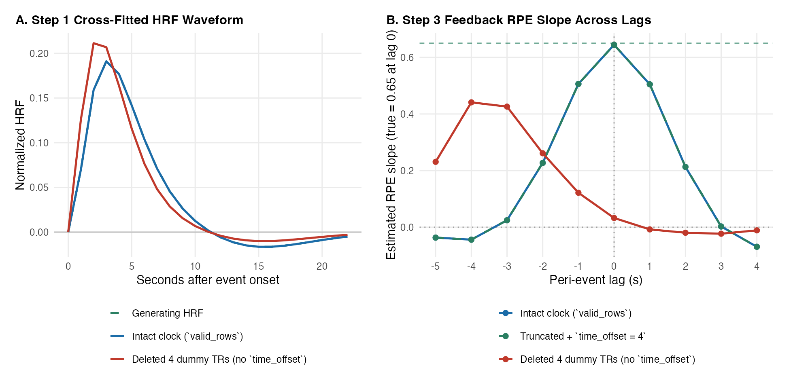
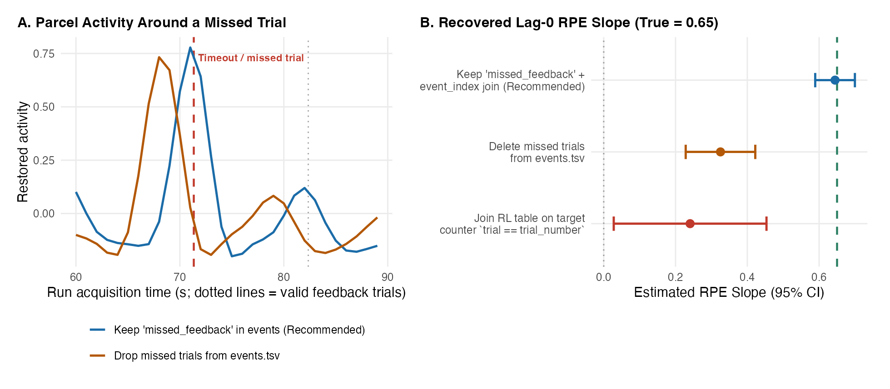
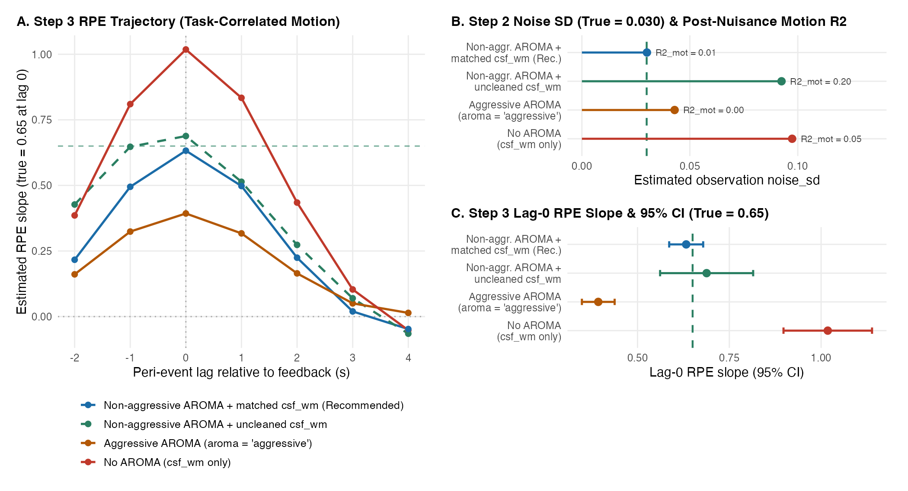

library(medusa)
sub01 <- read_fmriprep_subject(
fmriprep_dir = "/path/to/derivatives/fmriprep",
bids_dir = "/path/to/bids",
sub = "01",
task = "learn",
space = "MNI152NLin2009cAsym",
atlas = "/path/to/schaefer_200_mni.nii.gz",
strategy = "24p",
fd_threshold = 0.5,
include_non_steady_state = TRUE
)
candidates <- hrf_library(tr = sub01$tr, preset = "medusa")
hrf_fit <- estimate_crossrun_hrf(sub01, kernel_grid = candidates, pooling = "parcel")Step 0: Task Design and BIDS/fMRIPrep Ingestion
Scheduling identifiable multi-run tasks and loading neuroimaging derivatives onto an intact acquisition clock
Overview
Before hemodynamic estimation (Step 1) or continuous BOLD deconvolution (Step 2) begins, two practical foundations govern how accurately trial-level neural signals can be recovered:
- Experimental task scheduling: Splitting trials across multiple scanner runs (\(R \ge 3\)) gives Step 1 independent out-of-sample folds for regional HRF estimation, while jittering the intervals between adjacent within-trial phases (such as
cueandfeedback) makes overlapping neural epochs separable in Step 3. - Clock-aligned derivative ingestion: Preprocessed 4D BOLD volumes, brain masks,
fMRIPrepnuisance/censoring tables, and BIDS*_events.tsvschedules must share an exact physical acquisition clock, while real behavioral occurrences such as missed responses or timeouts remain represented in the forward event schedule.
For studies organized in BIDS with fMRIPrep (or BrainGnomes) derivatives, read_fmriprep_subject() assembles all run-level NIfTI matrices, event schedules, nuisance regressors, non-steady-state and motion censoring masks, and parcellation labels into a single "medusa_nifti_ts" bundle ready for Step 1:
NotePosition in the MEDuSA Pipeline
Task Schedule + BIDS/fMRIPrep Files \(\longrightarrow\) Step 0 (read_fmriprep_subject) \(\longrightarrow\) "medusa_nifti_ts" subject bundle \(\longrightarrow\) Step 1 (estimate_crossrun_hrf)
The walkthrough below develops Step 0 across five substeps—from planning run structure and inter-phase jitter (0.1), to ingesting BIDS and fMRIPrep files on an intact acquisition clock (0.2), handling missed or timeout trials (0.3), joining computational model variables safely via event_index (0.4), and denoising motion-contaminated runs with non-aggressive ICA-AROMA and matched nuisance projection (0.5).
Goals, Inputs, and Outputs
Goals of Step 0
- Design identifiable multi-run event schedules: Ensure adjacent task phases decouple under hemodynamic blurring and provide independent runs for out-of-sample HRF cross-fitting.
- Read 4D NIfTI runs into consistent
time × voxelmatrices: Verify spatial grid geometry across runs, intersect per-run brain masks (mask_policy = "intersect"), and attach parcel labels or spatial coordinates. - Preserve exact volume timestamps during dummy-scan and motion censoring: Flag initial non-steady-state volumes and high-motion frames in
valid_rowsrather than deleting time rows, keeping eventonsetseconds locked to the scanner clock. - Retain complete forward event schedules and trial keys: Keep nuisance task occurrences (such as missed-response timeouts) in
eventsso their BOLD waves are removed rather than absorbed into noise, and link external behavioral or reinforcement-learning (RL) tables through unambiguousevent_indexkeys.
Inputs: What Step 0 Receives and Why
| Input | Source & Format | Why It Is Set Up That Way |
|---|---|---|
fmriprep_dir & sub |
Root fMRIPrep derivatives directory and subject label (with or without "sub-" prefix) |
Automatically discovers *_desc-preproc_bold.nii.gz, per-run *_desc-brain_mask.nii.gz, and *_desc-confounds_timeseries.tsv across single-session or multi-session (ses-*) layouts. |
bids_dir & task |
Raw BIDS root (defaults to dirname(fmriprep_dir) when nested under derivatives/) and task name |
Locates matching *_events.tsv schedules and JSON sidecars (RepetitionTime, StartTime), handling run labels consistently across run-1 and run-01 zero-padding conventions. |
space, res, & atlas |
Template space substring (e.g., "MNI152NLin2009cAsym"), optional resolution tag, and optional 3D integer/labeled NIfTI parcellation |
Filters BOLD derivatives when multiple output spaces exist and maps retained gray-matter voxels directly onto parcel_ids for parcel pooling (Step 1 and Step 4). |
strategy, fd_threshold, & include_non_steady_state |
Confound regression preset ("6p", "24p", "36p", "compcor", "csf_wm", "csf_wm_8p", "24p_csf_wm", "none") and framewise censoring rules |
Converts BIDS "n/a" strings on derivative lag columns cleanly to 0, drops linearly dependent nuisance columns per run, and builds logical valid_rows masks without shifting volume timestamps. |
aroma, aroma_dir, & aroma_clean_nuisance |
Optional ICA-AROMA mode ("none", "nonaggressive", "auto", "aggressive"), optional fMRIPost-AROMA derivatives root, and matched confound projection flag |
Discovers fMRIPost-AROMA (*_desc-melodic_mixing.tsv + *_desc-aroma_metrics.tsv) or legacy fMRIPrep AROMA tables, denoises BOLD via Pruim et al. (2015) partial regression, and projects the identical AROMA operator out of $nuisance (Lindquist et al., 2019). |
| External model covariates (optional) | Trial-level behavioral, RL, or drift-diffusion table keyed by (id, run, event_index) (or extra columns inside *_events.tsv) |
Keeps Steps 1–2 blind to downstream hypothesis predictors while supporting exact trial matching in Step 3 (decon_epoch_regression()). |
Outputs: What Step 0 Produces and Why It Is Set Up That Way
read_fmriprep_subject() (or modular assembly via read_nifti_ts(), read_fmriprep_confounds(), and read_bids_events()) produces an S3 "medusa_nifti_ts" object containing:
| Output Component | Structure | Why It Is Set Up That Way |
|---|---|---|
bold |
Named list (run1, run2, …) of T_r × V numeric matrices |
Reads 4D NIfTI volumes directly into matrices restricted to the shared in-mask voxel set \(V\). |
tr, voxel_map, & geometry |
Scalar tr (s), V-row coordinate/parcel lookup table, and 3D NIfTI header template |
Anchors continuous-to-discrete time mapping and enables instant 3D/4D NIfTI reconstruction via write_nifti_ts() and backproject_medusa(). |
parcel_ids |
Named vector of parcel labels across the \(V\) columns | Supplies spatial_groups / parcel_groups automatically to Steps 1, 3, and 4 when an atlas is provided. |
events |
Standardized data.frame (run, onset, duration, condition, plus all extra BIDS trial columns) |
Normalizes BIDS trial_type to condition, converts "n/a" durations to 0 impulses while retaining numeric covariates, and aligns run names to names(bold). |
confounds, nuisance, & valid_rows |
"medusa_confounds" object plus per-run nuisance matrices and logical masks (TRUE = keep, FALSE = censor) |
Passed automatically when estimate_crossrun_hrf(sub01, ...) is called, with $confounds$summary providing a run-by-run censoring and motion QC table. |
aroma (when aroma != "none") |
Provenance list (mode, fit_valid, clean_nuisance, and $summary component table) |
Audits total, accepted, and rejected MELODIC components per run and confirms whether $nuisance received matched AROMA projection. |
Step-by-Step Walkthrough: Substeps and Choice Points
0.1 Schedule runs and inter-phase jitter for trial-level identifiability
Suppose you are designing—or evaluating an archival dataset for—a multi-phase decision task in which each trial presents a cue followed by feedback. Even before data are collected, two structural features of the schedule determine how well any deconvolution method can separate neural responses:
- Within-trial inter-stimulus jitter (ISI): When
cueandfeedbackare separated by a constant short interval on every trial (for example, \(0.8\text{ s}\)) and cue-evoked activity covaries with the feedback predictor (as expected value covaries with reward prediction error), their convolved BOLD waves move nearly in lockstep. Varying thecue-to-feedbackinterval across trials (for instance, across \(1.0\text{--}4.5\text{ s}\)) breaks that collinearity so Step 3’s(T, O)de-mixing operator can subtract the cue response cleanly without inflating feedback variance. - Multi-run partitioning (\(R\)): Step 1 learns each target run’s HRF from the participant’s other runs (\(s \neq r\)). Holding total trial count fixed at 60 trials, collecting a single continuous run (\(R = 1\)) forces Step 1 to fall back on within-run temporal sub-blocks, whereas collecting \(R = 2\) runs leaves only a single training run per fold—meaning one noisy or motion-contaminated run serves as the sole training set for the cleaner run. Splitting the same 60 trials across \(R \ge 3\) runs ensures every cross-fitting fold pools across at least two runs and unlocks cross-run stability checks.
Figure 3.1 and Table 3.1 illustrate both effects across 20 simulated replications of a two-parcel task (Target_Parcel carries both a cue response and a true \(0.60\) feedback RPE slope; CueOnly_Parcel responds strongly to the correlated cue with zero true feedback effect). Introducing uniform (\(1.0\text{--}4.5\text{ s}\)) or truncated-exponential (\(1.0\text{--}6.0\text{ s}\)) cue–feedback jitter eliminates residual cue-to-feedback bleed in CueOnly_Parcel and reduces feedback slope RMSE, while partitioning 60 trials across \(3\text{--}4\) runs stabilizes HRF peak recovery and downstream slope accuracy when one run exhibits elevated scanner noise.

design_benchmarks.csv): (A) Jittering the within-trial cue-to-feedback ISI decouples overlapping epochs, reducing both target feedback slope RMSE and false cue-to-feedback spillover in a cue-only parcel; (B) For a fixed 60-trial budget when Run 1 has elevated noise, partitioning into \(R \ge 3\) runs stabilizes Step 1 out-of-sample HRF recovery and Step 3 slope estimation.
Show supporting code
knitr::kable(
db_tbl[, c("dimension", "setting", "hrf_mae_sec", "mean_gain", "target_mean", "target_rmse", "mean_slope_se", "cue_bleed_abs")],
col.names = c("Design Dimension", "Schedule / Partition", "HRF Peak MAE (s)", "Step 2 Gain", "Mean Beta", "Slope RMSE", "Mean SE", "Cue Bleed |Beta|"),
digits = c(0, 0, 3, 3, 3, 3, 3, 3),
row.names = FALSE
)| Design Dimension | Schedule / Partition | HRF Peak MAE (s) | Step 2 Gain | Mean Beta | Slope RMSE | Mean SE | Cue Bleed |Beta| |
|---|---|---|---|---|---|---|---|
| Cue-Feedback ISI Schedule (3 runs x 20 trials) | Fixed 0.8 s (Unjittered rapid) | 0.336 | 0.482 | 0.498 | 0.180 | 0.029 | 0.044 |
| Cue-Feedback ISI Schedule (3 runs x 20 trials) | Fixed 1.8 s (Unjittered short) | 0.104 | 0.497 | 0.592 | 0.021 | 0.024 | 0.008 |
| Cue-Feedback ISI Schedule (3 runs x 20 trials) | Uniform jitter 1.0-4.5 s | 0.001 | 0.501 | 0.606 | 0.011 | 0.024 | 0.007 |
| Cue-Feedback ISI Schedule (3 runs x 20 trials) | Exponential jitter 1.0-6.0 s | 0.000 | 0.501 | 0.601 | 0.014 | 0.024 | 0.008 |
| Run Structure (60 total trials, moderate noise) | 1 run x 60 trials (Sub-block split) | 0.060 | 0.474 | 0.606 | 0.035 | 0.036 | 0.028 |
| Run Structure (60 total trials, moderate noise) | 2 runs x 30 trials (1 training run/fold) | 0.038 | 0.498 | 0.612 | 0.026 | 0.029 | 0.020 |
| Run Structure (60 total trials, moderate noise) | 3 runs x 20 trials (Recommended >=3 runs) | 0.013 | 0.499 | 0.610 | 0.023 | 0.027 | 0.016 |
| Run Structure (60 total trials, moderate noise) | 4 runs x 15 trials (4-fold cross-fit) | 0.016 | 0.499 | 0.602 | 0.015 | 0.027 | 0.015 |
Choice point — Task design targets and small-parcel thresholds:
- Number of runs: Aim for \(R = 3\text{--}5\) task runs per participant with at least \(15\text{--}25\) target trials per run (45–100+ total trials). Single-run and two-run datasets remain fully supported, with \(R \ge 3\) providing the strongest out-of-sample HRF cross-validation.
- Within-trial ISI and inter-trial ITI jitter: When adjacent phases within a trial will be analyzed separately, jitter their separation across at least \(1.0\text{--}4.5\text{ s}\) (truncated exponential or uniform) or include a modest fraction (10–20%) of catch/cue-only trials; jitter inter-trial intervals across \(3\text{--}8\text{ s}\) (or longer in slow-trial tasks) so baseline drift and AR(\(p\)) noise remain well separated from task responses.
- Tiny subcortical nuclei (
min_parcel_voxels): In Step 1,pooling = "parcel"requires at leastmin_parcel_voxels = 5Lvoxels per parcel before departing from the canonical reference waveform. When analyzing very small subcortical structures (\(<5\) voxels at \(2\text{--}3\text{ mm}\) isotropic resolution), passmin_parcel_voxels = 2L(or acquire higher spatial resolution) so supported fast vascular timing can be learned.
0.2 Ingest BIDS and fMRIPrep derivatives on an intact acquisition clock
Once fMRIPrep preprocessing completes, each run produces a 4D BOLD NIfTI file, a 3D brain mask, a *_desc-confounds_timeseries.tsv table, and a raw BIDS *_events.tsv file whose onset column records event times in seconds from the start of volume 1 (\(t = 0\text{ s}\)).
Calling read_fmriprep_subject() performs four coordinated ingestion steps automatically:
- Mask intersection and atlas alignment: Reads all runs’ brain masks, retains voxels present in every run (
mask_policy = "intersect"so parcel definitions stay identical across cross-fitting folds), checks 3D affine/dimension agreement againstatlas, and extracts the 4D runs directly intoT_r × Vmatrices. - Confound cleaning and rank protection: Parses
*_desc-confounds_timeseries.tsvunder a standard preset (strategy = "6p","24p","36p","24p_csf_wm", or"compcor"), replaces BIDS"n/a"strings on temporal derivative/quadratic lag rows with0, centers columns, and drops any zero-variance or collinear columns per run. - Clock-preserving frame censoring (
valid_rows): FlagsfMRIPrep’snon_steady_state_outlier*dummy scans (include_non_steady_state = TRUE) alongside frames exceedingfd_thresholdordvars_thresholdby settingvalid_rows = FALSErather than deleting rows frombold. - BIDS event standardization: Reads
*_events.tsv, mapstrial_typetocondition, treats"n/a"durations as0-second impulses, and coerces numeric trial columns cleanly.
Table 3.2 shows the run-level $confounds$summary table produced by read_fmriprep_subject() on our three-run simulated BIDS/fMRIPrep dataset (240 volumes per run at \(\text{TR} = 1.0\text{ s}\), with 4 initial non-steady-state dummy volumes and 2 two-TR motion spikes per run, yielding 8 censored volumes or 3.3% per run).
Show supporting code
knitr::kable(
qc_tbl[, c("run", "n_volumes", "n_valid", "n_censored", "pct_censored", "n_fd_outliers", "n_non_steady_state", "mean_fd", "max_fd", "n_nuisance_cols")],
col.names = c("Run", "Volumes", "Valid", "Censored", "% Cens.", "FD Spikes", "Dummy TRs", "Mean FD", "Max FD", "Nuis. Cols"),
digits = c(0, 0, 0, 0, 2, 0, 0, 3, 3, 0),
row.names = FALSE
)sub01$confounds$summary) returned automatically by read_fmriprep_subject().
| Run | Volumes | Valid | Censored | % Cens. | FD Spikes | Dummy TRs | Mean FD | Max FD | Nuis. Cols |
|---|---|---|---|---|---|---|---|---|---|
| run1 | 240 | 232 | 8 | 3.33 | 4 | 4 | 0.093 | 0.809 | 6 |
| run2 | 240 | 232 | 8 | 3.33 | 4 | 4 | 0.090 | 0.862 | 6 |
| run3 | 240 | 232 | 8 | 3.33 | 4 | 4 | 0.092 | 0.790 | 6 |
Why is censoring initial dummy scans via valid_rows = FALSE preferable to slicing bold <- bold[-(1:4), ] in custom preprocessing scripts? When events.tsv timestamps are measured from volume 1 (\(t = 0\text{ s}\)), physically deleting the first 4 volumes without updating time_offset shifts every retained BOLD sample 4 seconds earlier relative to events$onset. As shown in Figure 3.2 and Table 3.3, keeping the intact 240-volume clock with valid_rows (lag0_beta = 0.644) and physically truncating 4 volumes while declaring time_offset = 4 (lag0_beta = 0.644) produce virtually identical results on the true 0.650 lag-0 RPE slope. By contrast, deleting 4 dummy volumes while leaving time_offset = 0 shifts the entire recovered profile backward by \(-4\text{ s}\), distorting Step 1’s cross-fitted HRF and collapsing the apparent lag-0 slope to 0.033.

clock_alignment_metrics.csv, true lag-0 RPE slope = 0.65): (A) Step 1 cross-fitted HRF waveform in Parcel 1; (B) Step 3 feedback RPE slope profile across peri-event lags -5 to +4 s. Censoring dummy volumes via valid_rows (include_non_steady_state = TRUE) and truncating with explicit time_offset = 4 agree completely, whereas truncating initial volumes without time_offset shifts neural readouts backward by 4 seconds.
Show supporting code
knitr::kable(
clock_tbl,
col.names = c("Dummy-Volume Clock Convention", "Est. HRF Peak (s)", "Lag-0 Beta", "Lag-0 SE", "Apparent Peak Lag (s)"),
digits = c(0, 3, 3, 3, 0),
row.names = FALSE
)| Dummy-Volume Clock Convention | Est. HRF Peak (s) | Lag-0 Beta | Lag-0 SE | Apparent Peak Lag (s) |
|---|---|---|---|---|
| Intact clock + valid_rows mask (Recommended) | 3.128 | 0.644 | 0.028 | 0 |
| Deleted 4 dummy TRs + explicit time_offset = 4 s | 3.128 | 0.644 | 0.028 | 0 |
| Deleted 4 dummy TRs without time_offset (Clock shifted) | 2.406 | 0.033 | 0.015 | -4 |
Choice point — One-call read_fmriprep_subject() vs. modular readers and confound strategy:
- Standard BIDS/
fMRIPrepdirectories: Useread_fmriprep_subject()withinclude_non_steady_state = TRUEandstrategy = "24p"(six rigid-body realignment parameters, their temporal derivatives, and quadratic terms) or"compcor"when anatomical/temporal CompCor components are desired alongside motion terms. WhenfMRIPost-AROMAor legacy ICA-AROMA mixing matrices are available, settingaroma = "nonaggressive"insideread_fmriprep_subject()(or callingread_fmriprep_aroma()+apply_aroma()) performs partial regression on BOLD and matched nuisance columns simultaneously so downstream confound projection never re-introduces motion variance. Remember that Steps 1–2 already add per-run intercepts, linear trends, and slow< 1/128 Hzcosine drift terms internally, so avoid pre-bandpass-filtering BOLD before MEDuSA. - Fast-TR multiband acquisitions (\(\text{TR} \le 1.0\text{ s}\)): Add
motion_bandstop_bpm = c(12, 20)andmotion_filter_target = "fd_only"insideread_fmriprep_subject()(orread_fmriprep_confounds()) so respiratory chest-wall modulation does not trigger false FD scrubbing; see Step 1 §1.5. - Custom preprocessing or
BrainGnomespipelines: Assemble the exact same inputs modularly viaread_nifti_ts(bold_files, mask = ..., atlas = ...),read_fmriprep_confounds(confound_files, censor_files = ...), andread_bids_events(event_files). If an upstream pipeline already discarded \(k\) initial dummy volumes before writing BOLD NIfTIs while leavingevents.tsvanchored to scanner trigger \(t = 0\), passtime_offset = k * trto Step 1 (or check the BIDS JSONStartTimefield).
0.3 Keep missed responses, timeouts, and catch trials in the event schedule
In real cognitive tasks, participants occasionally miss a response deadline or experience a timeout screen (response_time = "n/a", undefined RL choice/RPE). A natural temptation when preparing events for trial-level regression is to filter events.tsv down to valid completed trials before running Step 1.
From the perspective of the forward BOLD model (\(y = Ha + Z\gamma + \varepsilon\)), however, a missed trial is still a physical sensory and cognitive event in the scanner: the cue appeared, a timeout warning or visual change occurred, and salience/error-monitoring cortex responded strongly. Deleting those timestamps from events forces Steps 1–3 to treat large timeout-evoked BOLD waves as unexplained noise:
- In Step 1, unmodeled timeout waves inflate residual autocorrelation (\(\hat{\rho}\)).
- In Step 2, unmodeled BOLD deflections inflate
noise_sdand push automatic cross-validation tuning toward heavier smoothing (lambda), attenuating nearby valid trials. - In Step 3,
demix_other_events = TRUEcannot subtract the tail of a preceding timeout wave from the next valid feedback trial if the timeout event was omitted.
Instead, label missed or timeout events as a separate condition in events (for example, trial_type = "missed_feedback" or "timeout"), and keep target_condition = "feedback" in Step 3. Figure 3.3 and Table 3.4 demonstrate the improvement on sub-01 (where 3 of 18 trials per run are timeout trials evoking a strong cortical salience burst): keeping "missed_feedback" in events recovers the exact observation noise (0.029 vs. true 0.030), true AR(1) parameter (0.462 vs. true 0.450), and true lag-0 RPE slope (0.644 vs. 0.650), whereas deleting missed rows from events.tsv inflates estimated noise_sd by 57% and cuts the recovered RPE slope to 0.325.

missed_trial_metrics.csv, true lag-0 RPE slope = 0.65): (A) Restored continuous Parcel 1 activity around a Run 1 timeout trial (dashed red line) and neighboring valid feedback trials (dotted grey lines); (B) Recovered Step 3 lag-0 RPE slope (95% CI) comparing explicit 'missed_feedback' modeling + event_index join, deleting missed trials from events.tsv, and a misaligned trial-counter join.
Show supporting code
knitr::kable(
missed_tbl,
col.names = c("Missed-Trial & Join Strategy", "Est. noise_sd", "Est. AR(1) rho", "Lag-0 Beta", "Lag-0 SE", "Matched Trials"),
digits = c(0, 4, 3, 3, 3, 0),
row.names = FALSE
)| Missed-Trial & Join Strategy | Est. noise_sd | Est. AR(1) rho | Lag-0 Beta | Lag-0 SE | Matched Trials |
|---|---|---|---|---|---|
| Keep ‘missed_feedback’ in events + event_index join (Recommended) | 0.0293 | 0.463 | 0.644 | 0.028 | 45 |
| Delete missed trials from events.tsv (Timeout BOLD unmodeled) | 0.0458 | 0.682 | 0.325 | 0.049 | 45 |
Misaligned join on target counter trial == trial_number |
0.0293 | 0.463 | 0.241 | 0.109 | 39 |
Choice point — condition_map versus exclude_conditions in read_bids_events():
- Use
condition_map(or distincttrial_typestrings inevents.tsv) to group or retain every occurrence that evokes neural/sensory activity—including"missed_feedback","catch_cue","instruction_screen", and"button_press"—so Steps 1–3 model and de-mix them cleanly. - Reserve
exclude_conditionsstrictly for non-neural logging markers written into BIDS event files (such as"scanner_trigger","sync_pulse", or"eyetracker_calibration_flag").
0.4 Join computational model covariates safely via event_index
In cognitive neuroscience workflows, trial-by-trial predictors—such as reinforcement-learning expected values, prediction errors, or drift-diffusion parameters—often live either as extra columns inside *_events.tsv or in a separate behavioral/computational data.table fit outside fMRIPrep. MEDuSA supports both cleanly without risking trial-alignment shifts:
- In-table BIDS columns (
covariates = "rpe"or~ rpe + abs(rpe)): Becauseread_fmriprep_subject()preserves all extra columns insub01$events(converting"n/a"on non-target or missed rows toNA), passing column names or a one-sided formula todecon_epoch_regression()automatically extracts the rows wherecondition == target_conditionin exact chronological order. - External behavioral / RL model joins via
event_index: Every panel returned bydecon_epoch_regression()includes two index columns:trial: sequential counter1..m_validindexing only the retainedtarget_conditionoccurrences within that run.event_index: the exact integer row position in that run’seventstable (1..nrow(events_run)).
panel$trialruns1..15while tasktrial_numberruns1..18with gaps. As shown in the bottom row of Table 3.4, mistakenly merging an external RL table onpanel$trial == rl_dt$trial_numberscrambles every trial pairing after the first missed response (lag0_beta =0.241, losing 6 trials). Keying external computational tables by(id, run, event_index)(or carryingtrial_numberinsideevents.tsvand joining on(id, run, trial_number)) guarantees 1-to-1 alignment:
# Record within-run row position (`event_index`) when building external RL/DDM tables
ev_dt <- data.table::as.data.table(sub01$events)
ev_dt[, event_index := seq_len(.N), by = run]
# After Step 3/4 epoch extraction, join external computational predictors on (id, run, event_index)
panel_merged <- merge(
epochs$panel,
rl_model_dt[, .(id, run, event_index, rpe_rl, choice_entropy)],
by = c("id", "run", "event_index"),
all.x = FALSE
)0.5 Denoise motion-contaminated runs with non-aggressive ICA-AROMA
Beginning in fMRIPrep >= 23.1, spatial-ICA motion denoising moved out of fMRIPrep into standalone fMRIPost-AROMA, which writes each run’s full MELODIC time-course matrix (*_desc-melodic_mixing.tsv) and component labels (*_desc-aroma_metrics.tsv; or *_desc-MELODIC_mixing.tsv + *_AROMAnoiseICs.csv in legacy fMRIPrep <= 23.0) while leaving un-denoised *_desc-preproc_bold.nii.gz on disk so downstream pipelines control spatial smoothing and nuisance regression order.
When incorporating ICA-AROMA into task-fMRI deconvolution, two seemingly natural shortcuts introduce substantial distortion:
- Pitfall 1 — Aggressive AROMA strips task-correlated neural signal (Pruim et al., 2015): In decision and reinforcement-learning tasks, participants often move slightly in sync with salient task events—pressing a button on choice trials or flinching at unexpected feedback. Appending 30–60 rejected
aroma_motion_*columns directly into$nuisance(or projecting rejected components out of BOLD orthogonally without the accepted components) removes all variance shared between head motion and convolved task activity, attenuating downstream trial slopes while consuming dozens of degrees of freedom per run. Non-aggressive ICA-AROMA avoids this by fitting both accepted neural components and rejected motion components jointly to each voxel and subtracting only the unique contribution assigned to the rejected motion components. - Pitfall 2 — Uncleaned physiological confounds re-inject removed motion into BOLD (Lindquist et al., 2019): Even after BOLD is properly cleaned via non-aggressive AROMA, tissue nuisance time series in
*_desc-confounds_timeseries.tsv(such ascsfandwhite_matter) were extracted from the un-denoised scan and still carry strong motion contamination. If raw, uncleanedcsf/white_mattercolumns are passed into Steps 1–2 (nuisance_mode = "joint"), regressing AROMA-cleaned BOLD onto motion-contaminated confounds projects those removed motion artifacts right back into the BOLD residuals and deconvolved neural series, re-inflating observationnoise_sdand trial standard errors.
MEDuSA handles both requirements automatically—either in a single read_fmriprep_subject() call or step by step via read_fmriprep_aroma() and apply_aroma():
# Option A: Turnkey subject ingestion with non-aggressive ICA-AROMA + matched CSF/WM cleaning
# (auto-discovers co-located or sibling `derivatives/fmripost-aroma/` files even when
# fMRIPost-AROMA omits `space-*` entities from mixing/metrics filenames)
sub01_aroma <- read_fmriprep_subject(
fmriprep_dir = "/path/to/derivatives/fmriprep",
bids_dir = "/path/to/bids",
aroma_dir = "/path/to/derivatives/fmripost-aroma", # optional; auto-discovered when sibling
sub = "01",
task = "learn",
space = "MNI152NLin6Asym",
atlas = "/path/to/schaefer_200_mni6.nii.gz",
aroma = "nonaggressive",
aroma_clean_nuisance = TRUE, # projects identical AROMA operator out of $nuisance
strategy = "csf_wm", # physiological pairing without redundant 24p motion terms
fd_threshold = 0.5,
include_non_steady_state = TRUE
)
print(sub01_aroma$aroma$summary)
# Option B: Modular assembly on custom NIfTI + confound inputs
aroma <- read_fmriprep_aroma(mixing_files, bold = ts)
ts_clean <- apply_aroma(ts, aroma, mode = "nonaggressive")
conf_clean <- read_fmriprep_confounds(
confound_files, bold = ts_clean, strategy = "csf_wm",
aroma = aroma, fd_threshold = 0.5 # computes physical FD first, then AROMA-cleans csf/wm
)Figure 3.4 and Table 3.5 compare all four regimes end to end across Steps 0–3 on a three-run simulated BIDS + fMRIPrep + fMRIPost-AROMA participant (true noise_sd = 0.030, true lag-0 RPE slope = 0.650, 2 accepted neural ICs + 6 rejected motion ICs per run, including one feedback-locked motion component correlated \(r \approx 0.62\) with convolved RPE):
- Without AROMA (
aroma = "none",csf_wmonly): Unremoved motion inflates Step 2noise_sdmore than three-fold (0.097 vs.0.030) and biases the lag-0 RPE slope upward to 1.018. - Aggressive AROMA (
aroma = "aggressive"): Orthogonal removal of the task-correlated motion IC strips shared task variance, attenuating the lag-0 RPE slope by 40% down to 0.393. - Non-aggressive AROMA + uncleaned
csf_wm(aroma_clean_nuisance = FALSE): Regressing raw motion-contaminatedcsf/white_mattercolumns out of AROMA-cleaned BOLD re-injects pure motion ICs (R2_mot =0.20 vs. 0.01), inflating Step 2noise_sdback up to 0.092 and nearly tripling the lag-0 standard error (0.065 vs. 0.024). - Non-aggressive AROMA + matched
csf_wm(aroma = "nonaggressive",aroma_clean_nuisance = TRUE): Recovers the generating observation noise (0.030 vs.0.030) and an unbiased, high-precision lag-0 RPE slope (0.632, \(\text{SE} = 0.024\)).

aroma_denoising_metrics.csv, true observation noise_sd = 0.030, true lag-0 feedback RPE slope = 0.650): (A) Step 3 recovered peri-event RPE trajectory (-2 to +4 s) under task-correlated head motion; (B) Step 2 observation noise_sd and post-nuisance pure-motion variance (\(R^2_{\text{mot}}\)), showing artifact re-injection when csf_wm confounds are left uncleaned (aroma_clean_nuisance = FALSE; Lindquist et al., 2019); (C) Step 3 lag-0 RPE slope and 95% confidence interval.
Show supporting code
knitr::kable(
aroma_tbl,
col.names = c("AROMA & Confound Regime", "Est. noise_sd", "Post-Nuisance Motion R2", "Lag-0 Beta", "Lag-0 SE", "Lag-0 Bias"),
digits = c(0, 4, 3, 3, 4, 3),
row.names = FALSE
)| AROMA & Confound Regime | Est. noise_sd | Post-Nuisance Motion R2 | Lag-0 Beta | Lag-0 SE | Lag-0 Bias |
|---|---|---|---|---|---|
| No AROMA (csf_wm only) | 0.0974 | 0.053 | 1.018 | 0.0615 | 0.368 |
| Aggressive AROMA (aroma = ‘aggressive’) | 0.0429 | 0.000 | 0.393 | 0.0228 | -0.257 |
| Non-aggressive AROMA + uncleaned csf_wm | 0.0925 | 0.198 | 0.688 | 0.0647 | 0.038 |
| Non-aggressive AROMA + matched csf_wm (Recommended) | 0.0301 | 0.010 | 0.632 | 0.0236 | -0.018 |
Choice point — Pairing aroma, strategy, frame censoring, and BrainGnomes provenance:
- Recommended
strategywith AROMA: Pairaroma = "nonaggressive"(oraroma = "auto"in mixed cohorts where only some subjects/sessions have AROMA outputs) withstrategy = "csf_wm"(meancsf+white_matter; Parkes et al., 2018) or"csf_wm_8p"(adding temporal derivatives and quadratics ofcsf/white_matter). Avoid pairing AROMA with"24p"or"36p"expansion, whose realignment derivatives largely duplicate the motion subspace already removed by ICA-AROMA while consuming extra degrees of freedom. - Combining AROMA with FD censoring (and fast-TR respiratory filtering): Linear spatial ICA removes continuous head-motion and edge artifacts effectively, whereas abrupt multi-millimeter head jerks cause nonlinear slice-wise spin-history disruptions that no fixed spatial map captures completely. Because
read_fmriprep_confounds()evaluatesframewise_displacement(including optional fast-TRmotion_bandstop_bpm = c(12, 20)notch filtering; Step 1 §1.5) before AROMA projection, keepingfd_threshold = 0.5(or0.3with respiratory filtering) masks severe jerks invalid_rowswhilearoma_fit_valid = FALSE(default) fits the full-scan MELODIC time series on its native clock (aroma_fit_valid = TRUEoptionally restricts the partial regression tovalid_rows). - Automatic
BrainGnomesprovenance protection (desc = "postproc"): When ingesting postprocessedBrainGnomesstreams,read_fmriprep_subject()inspects<bold>.jsonsidecar metadata (inspect_braingnomes_provenance()): it halts with a clear diagnostic ifscrub_timepointsphysically deleted volumes from the clock, skips duplicate AROMA projection with a warning ifapply_aromaalready ran upstream, and defaultsstrategy = "none"whenconfound_regressionwas already applied. - Frame-level
$variance_confoundsfor Stage-3 covariance regression: Alongside mean-model$nuisanceand$valid_rows,read_fmriprep_confounds()(andsub_obj$confoundsinsideread_fmriprep_subject()) automatically extracts non-negative physiological and motion variance envelopes (framewise_displacement,std_dvars/dvars, andrvtwhen present) into$variance_confounds. Passingvariance_confounds = sub_obj(orvariance_confounds = conf) directly todecon_epoch_regression()in Steps 3–4 lets the Adaptive-POET + covariance-regression engine account for heteroskedastic motion/respiratory bursts in downstream connectivity inference (Step 6).
Recommended Settings
For multi-run BIDS + fMRIPrep task studies, ingest each participant with read_fmriprep_subject() (looping over subject IDs in batch scripts) and inspect $confounds$summary (and $aroma$summary when using ICA-AROMA) before launching Step 1:
library(medusa)
# Standard fMRIPrep ingestion (or set aroma = "nonaggressive", strategy = "csf_wm"
# when fMRIPost-AROMA / legacy AROMA outputs are available; see Substep 0.5)
sub_obj <- read_fmriprep_subject(
fmriprep_dir = fmriprep_dir,
bids_dir = bids_dir,
sub = sub_id,
task = "learn",
space = "MNI152NLin2009cAsym",
atlas = atlas_nii_path,
mask_policy = "intersect",
aroma = "none", # or "nonaggressive" (paired with strategy = "csf_wm")
strategy = "24p",
fd_threshold = 0.5, # or 0.3 with motion_bandstop_bpm = c(12, 20) for fast TR
include_non_steady_state = TRUE
)
# Quick pre-flight check before Step 1
print(sub_obj$confounds$summary[, c("run", "n_volumes", "pct_censored", "n_non_steady_state", "mean_fd", "aroma_cleaned")])
table(sub_obj$events$run, sub_obj$events$condition)| Choice Point / Parameter | Recommended Setting | Why |
|---|---|---|
| Run structure & phase jitter | \(R \ge 3\) runs; jitter correlated adjacent phases across \(\ge 1.0\text{--}4.5\text{ s}\) | Gives Step 1 \(\ge 2\) independent training runs per cross-fitting fold and decouples adjacent neural phases in Step 3 (T, O) de-mixing. |
mask_policy |
"intersect" |
Guarantees identical voxel/parcel membership across runs within each participant. |
include_non_steady_state |
TRUE (with intact 4D BOLD volumes) |
Masks initial non_steady_state_outlier* dummy frames via valid_rows without shifting event timestamps relative to volume 1. |
aroma & aroma_clean_nuisance |
"nonaggressive" + TRUE + strategy = "csf_wm" when AROMA exists; "none" + "24p" otherwise |
Removes motion ICs via partial regression without stripping task-correlated neural signal (Pruim et al., 2015) or re-injecting motion through uncleaned confounds (Lindquist et al., 2019). |
fd_threshold & motion_bandstop_bpm |
0.5 (standard TR) or 0.3 + motion_bandstop_bpm = c(12, 20) (fast TR \(\le 1\text{ s}\)) |
Censors genuine spin-history head jerks on an intact clock without scrubbing normal fast-TR breathing oscillations. |
| Missed / timeout trials | Retain in events as separate condition ("missed_feedback") |
Models evoked salience/visual BOLD waves in Steps 1–2 and subtracts their collateral tail in Step 3 rather than inflating residual noise. |
| External trial-table joins | Merge on c("id", "run", "event_index") (or trial_number stored in events.tsv) |
Prevents silent row shifts between panel$trial (1..m_valid) and task trial_number (1..N_total) when missed trials occur. |
Practical Considerations, Pre-Flight QC Checklist, and Handoff to Step 1
Before passing sub_obj into estimate_crossrun_hrf() (Step 1):
- Screen high-motion runs via
$confounds$summary: Runs withpct_censored > 25–30%or very short contiguous unmasked segments (< 15–20TRs) carry limited effective degrees of freedom; consider excluding severely corrupted individual runs before cross-fitting (retaining the participant if \(\ge 2\) clean runs remain, or falling back to single-run sub-block cross-fitting if 1 clean run remains). - Verify event onset units and bounds: Check
range(sub_obj$events$onset)per run. Event times must be in seconds (never TR indices or milliseconds) and fall within \([0, (T_r - 1)\cdot\text{TR} + \text{time\_offset}]\). Events occurring within the final 4–6 seconds of a run before scanner shutoff have truncated causal HRF support and will be gated automatically by Step 3’smin_bold_coveragerule. - Verify condition tables across runs: Confirm via
table(sub_obj$events$run, sub_obj$events$condition)that yourtarget_conditionappears with consistent spelling in every task run and that missed/timeout occurrences are labeled distinctly rather than dropped. - Scope handoff: Step 0 assembles validated, clock-aligned run matrices, spatial metadata, censoring masks, and complete event schedules without fitting any statistical parameters; out-of-sample HRF identification and \(\text{AR}(p)\) noise estimation begin in Step 1. For side-by-side visual examples of dummy-volume clock shifts and TR-index onset errors, see the Visual QC and Troubleshooting Gallery.
Mathematical & Simulation Details
- Non-aggressive ICA-AROMA oblique projector (
apply_aroma()): Let \(M \in \mathbb{R}^{T_r \times C}\) denote a run’s MELODIC mixing matrix partitioned into accepted components \(M_{\text{acc}}\) and rejected noise components \(M_{\text{rej}}\) (classification == "rejected"), and let \(\tilde{M} = M - \mathbf{1}\bar{m}_I^\top\) center each component on the fitting frame index set \(I\) (all frames whenfit_valid = FALSE, orvalid_rowswhenfit_valid = TRUE).apply_aroma(..., mode = "nonaggressive")solves the SVD-stabilized joint least-squares system \([\mathbf{1}, \tilde{M}][\hat{\mu}^\top; \hat{B}^\top]^\top = Y\) on \(I\) and subtracts only the centered rejected block across all \(T_r\) rows (preserving each voxel’s baseline mean \(\hat{\mu}\) while avoiding intercept shifts when component sample means are nonzero): \[ Y_{\text{nonagg}} = Y - \tilde{M}_{\text{rej}}\hat{B}_{\text{rej}} = P_{\text{aroma}} Y + (I - P_{\text{aroma}})\mathbf{1}\hat{\mu}^\top, \qquad P_{\text{aroma}} = I - \tilde{M}_{\text{rej}}\bigl[(\tilde{M}^\top \tilde{M})^+ \tilde{M}^\top\bigr]_{\text{rej}}. \] Whenaroma_clean_nuisance = TRUE,read_fmriprep_confounds()applies the identical partial-regression operator \(P_{\text{aroma}}\) (followed by column re-centering and rank pruning) to the selected nuisance matrix \(Z_r\) so subsequent joint nuisance projection in Steps 1–2 operates strictly within the AROMA-cleaned subspace (Lindquist et al., 2019). By contrast,mode = "aggressive"applies the orthogonal projector \(I - \tilde{M}_{\text{rej}}(\tilde{M}_{\text{rej}}^\top \tilde{M}_{\text{rej}})^+ \tilde{M}_{\text{rej}}^\top\), which strips neural signal proportional to \(\tilde{M}_{\text{rej}}^\top x_{\text{task}} \neq 0\). - Part 1 (Design & Jitter Benchmarks): 20 Monte Carlo replications per condition (
TR = 1.0 s, generating HRF peak3.13 s,AR(1)\(\rho = 0.45\), 6 voxels inTarget_Parcelwith cue response \(1.2 + 0.45 c_i\) and feedback response \(0.9 + 0.60\,\text{RPE}_i\), 6 voxels inCueOnly_Parcelwith cue response \(1.4 + 0.55 c_i\) and zero feedback response, \(\operatorname{Cor}(c_i, \text{RPE}_i) = 0.50\)). Run-structure comparisons hold total trials fixed at 60 (1×60,2×30,3×20,4×15) with elevated noise on Run 1 (2.1×baseline SD) to reflect realistic inter-run scan quality variation. - Part 2 (On-Disk BIDS +
fMRIPrepIngestion): Builds a complete temporary BIDS +fMRIPrepsubject directory (3runs \(\times\)2404D NIfTI volumes, 3D masks, 2-parcelatlas.nii.gz,*_bold.json,*_desc-confounds_timeseries.tsvwith4non_steady_state_outliercolumns and FD spikes, and*_events.tsvwith18trials/run including3"missed_feedback"timeouts and"n/a"tokens) and ingests it live viaread_fmriprep_subject(). - Part 3 (On-Disk
fMRIPost-AROMABenchmark): Builds a 3-run BIDS +fMRIPrep(space-MNI152NLin6Asym_res-2) + siblingderivatives/fmripost-aroma/(*_res-2_desc-melodic_mixing.tsv+*_desc-aroma_metrics.tsv,2accepted neural ICs +6rejected motion ICs includingIC_3correlated \(r = 0.62\) with convolved feedback RPE, shared physiologicalcsf/white_matternoise contaminated by motion ICs, andAR(1)\(\sigma_{\text{obs}} = 0.030\), \(\rho = 0.45\)) subject and runs all four AROMA/confound regimes end to end through Steps 0–3.
Step 0 simulation script · Figure script · Design benchmarks CSV · Confounds QC CSV · Clock alignment CSV · Missed-trial metrics CSV · AROMA denoising CSV